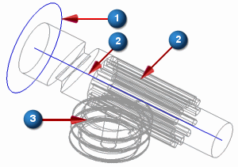

创建连杆
使用如图所示的实体创建名为 Ring、Plunger 以及 Worm 的连杆。

-
 环形物(Ring)：选择圆弧1。这是一个虚拟的连杆，不表示实际的几何体。
环形物(Ring)：选择圆弧1。这是一个虚拟的连杆，不表示实际的几何体。 -
 柱塞(Plunger)：选择实体2及其中心线，您可能需要将渲染样式更改为静态线框才能够选择中心线。
柱塞(Plunger)：选择实体2及其中心线，您可能需要将渲染样式更改为静态线框才能够选择中心线。 -
 蜗杆(Worm)：选择实体3。
蜗杆(Worm)：选择实体3。
对于质量属性选项，选择无。